Ребрендинг Befit24
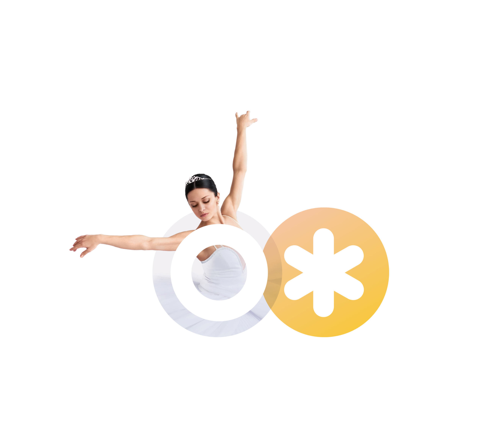
В начале апреля Дмитрий и Екатерина — создатели бренда BeFit24 объявили на своей странице в Фейсбуке о поиске агентства для проведения ребрендинга. Я попал туда совершенно случайно — по рекомендации нашего общего знакомого из Сколково. Попал и тут же влюбился — потрясающая задача, заказчик — Дима и Катя по-настоящему любящие своё дело — идеальные условия для старта.
Решенные задачи: нейминг, создание логотипа
Сроки: 3 недели
Результатом стал новый бренд «ОЖ» и полсотни динамических логотипов, но обо всём по порядку.
Обязательный набор ярких образов, отражающих суть
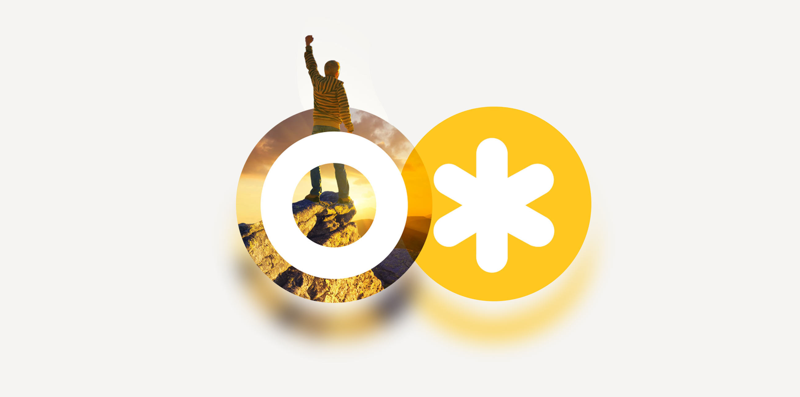
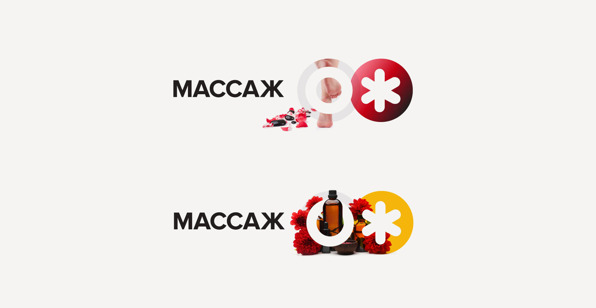
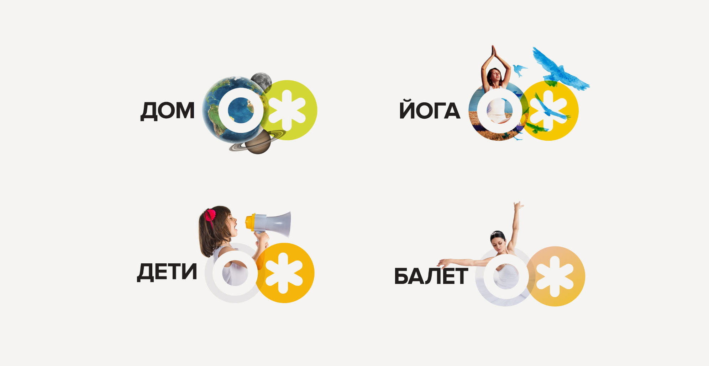
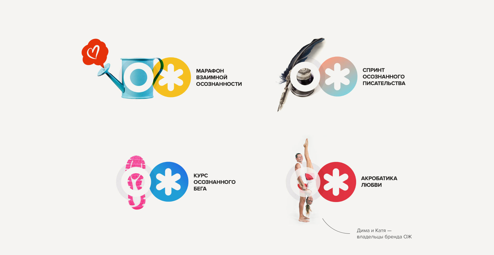
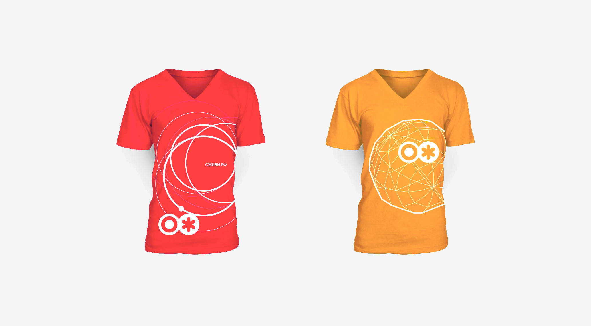

Но начиналось все с презентации, названия и первых черновых логотипов
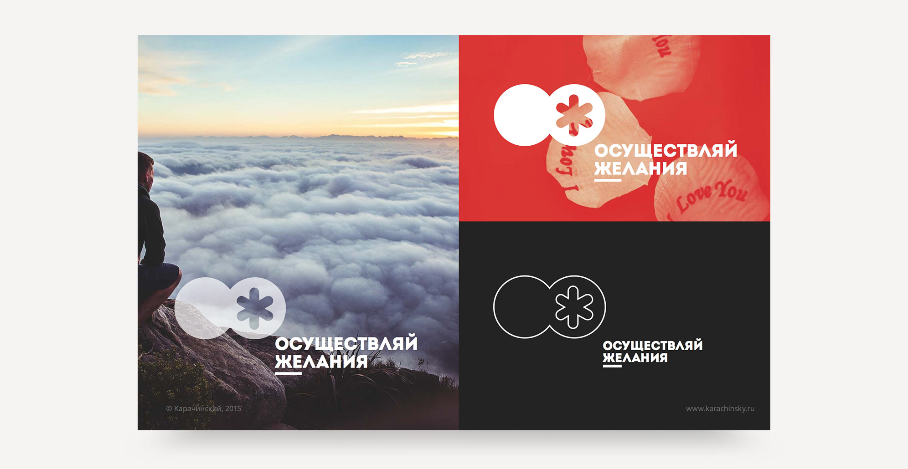
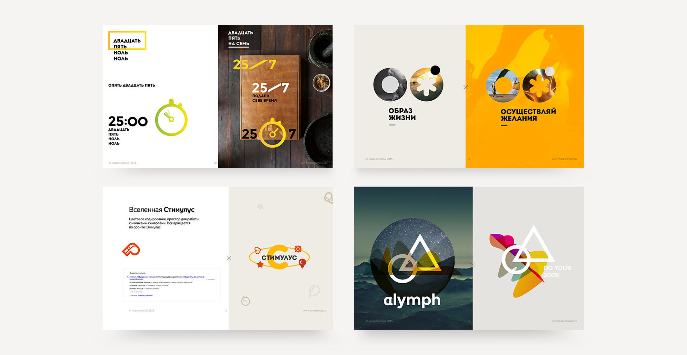
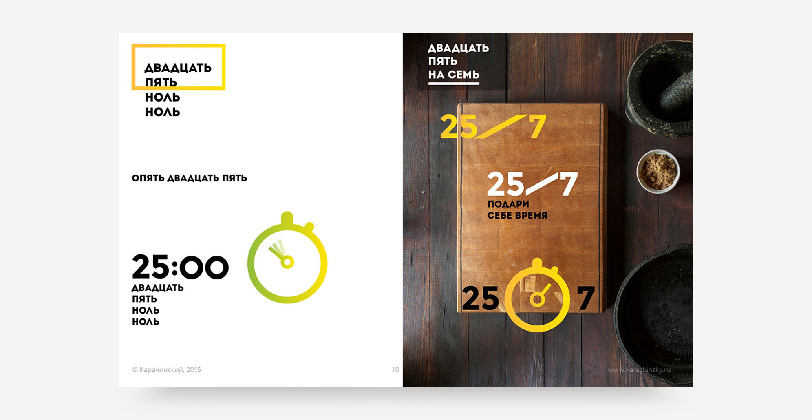
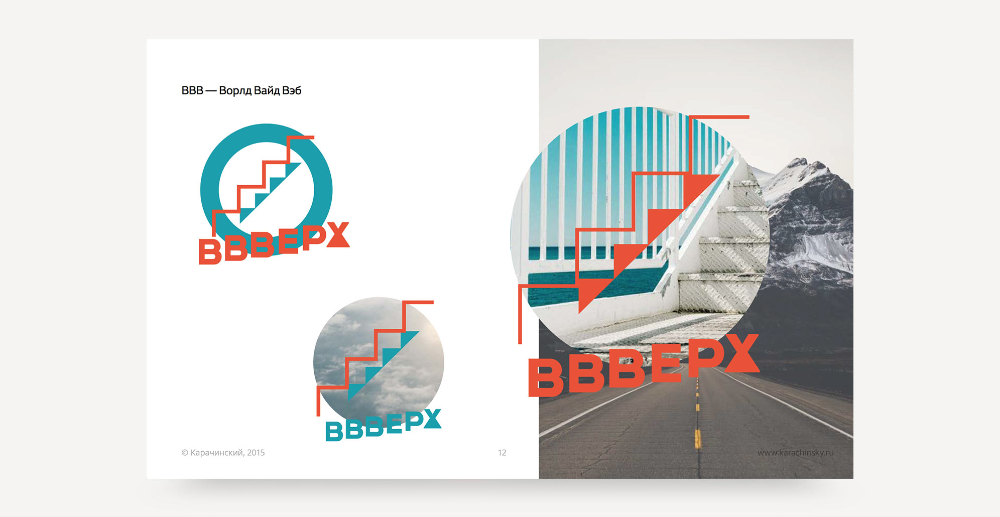
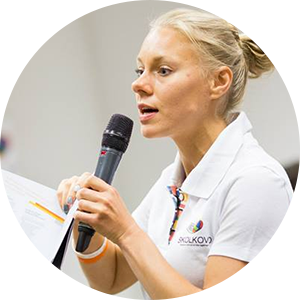
Co-Founder @ ОЖ (BeFit24)
Чего хочет заказчик от исполнителя? Чтобы он задавал как можно меньше вопросов, понимал всё с полуслова и удивлял как можно чаще. Мы все взрослые люди и понимаем, что это невозможно. Однако в жизни есть место чудесам и чудесным людям. Саша определённо умеет создавать чудеса.
[...]
В общем, ребята, это счастье от совместного творчества и взаимопонимания.
От всей души желаю каждому заказчику когда-нибудь встретить своего Пигмалиона!